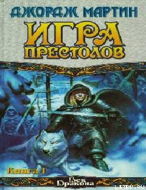

ИПVesteros taxti uchun shafqatsiz kurashlar boshlangan epik fantastik roman.
Bu asar qadimiy va shafqatsiz Vesteros yerlarida taxt talashayotgan qirollik oilalari va qahramonlarning murakkab taqdiri haqida hikoya qiladi. Siyosiy intrigalar, xiyonatlar va qadimiy afsonalarning qayta jonlanishi fonida ulug'vor janglar boshlanadi. Kitob o'quvchini sirli va hayajonli xayoliy olam sari yetaklaydi.